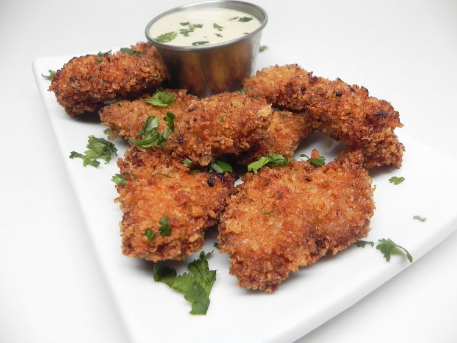

Karaage (Japanese Fried Chicken) with Honey Mayoster Sauce
Home

Description
schen1 says that this karaage recipe is very easy to make and guests always enjoy eating it. It can be served as an appetizer or as a quick weekday dinner over a bed of rice.
Marinating the chicken pieces the night before gives the karaage more flavour. But even if prepared as a last-minute meal, the dipping sauce shall alleviate all worries. Serve it hot with shredded lettuce and a lemon wedge.
Ingredients
Chicken:
- 1 egg
- 1 ½ tablespoons low-sodium soy sauce
- 1 tablespoon honey
- 2 tablespoons minced garlic
- 2 tablespoons minced fresh ginger
- 1 cup panko bread crumbs
- 1 pound skinless, boneless chicken thighs, cut into bite-sized pieces
- vegetable oil for frying
Sauce:
- 1/2 cup Japanese mayonnaise
- 2 tablespoons honey
- 3 tablespoons mirin (Japanese sweet wine)
- 2 tablespoons Dijon mustard
- 1 table spoon low-sodium soy sauce
Steps
- Whisk 1 1/2 tablespoons soy sauce, 1 tablespoon honey, garlic, and ginger together in a large glass or ceramic bowl. Add chicken and toss to evenly coat. Cover the bowl with plastic wrap and marinate in the refrigerator for 8 hours to overnight.
- Remove chicken from marinade and shake off excess. Discard remaining marinade.
- Beat egg in a bowl until smooth. Add panko bread crumbs to a shallow bowl. Dip chicken into beaten egg. Lift up so excess egg drips back in the bowl. Press into panko until completely coated. Place the breaded chicken, unstacked, onto a plate. Repeat with remaining chicken.
- Heat oil in a deep fryer or large saucepan to 350 degrees F (175 degrees C). Lower chicken carefully into the hot oil in batches. Fry until golden brown, about 5 minutes. Transfer to paper towels to drain. Repeat with remaining chicken.
- Whisk Japanese mayonnaise, mirin, 2 tablespoons honey, Dijon mustard, and 1 tablespoon soy sauce together in a bowl; pour sauce over chicken.